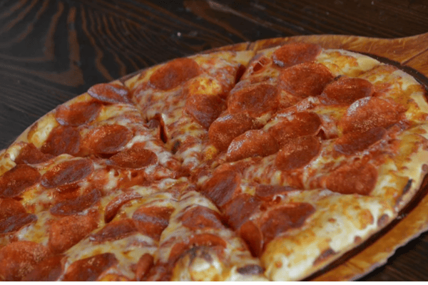

Welcome to
TONY'S BIG CHEESE PIZZA
or call us at: (509) 575-7977
Every morning, our crew is very busy making sure to use the freshest
and finest ingredients for each delicious pizza we provide to our
valued customers!
* Our dough is made fresh fromscratch daily.
* We grind our cheese every day using only 100% real cheese that is
fresh and never frozen.
* Our tomato sauce is fresh-packed and made with our secret blend of
spices.
* Our vegetables are sliced fresh in our store.